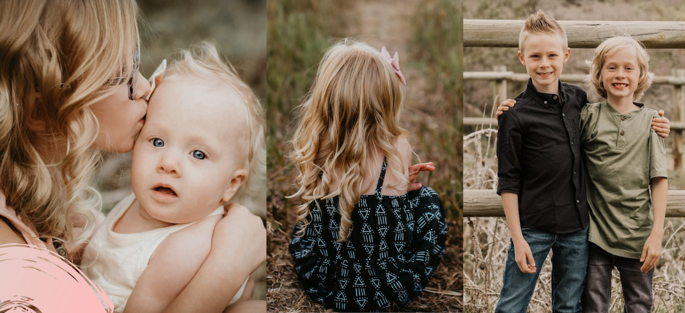
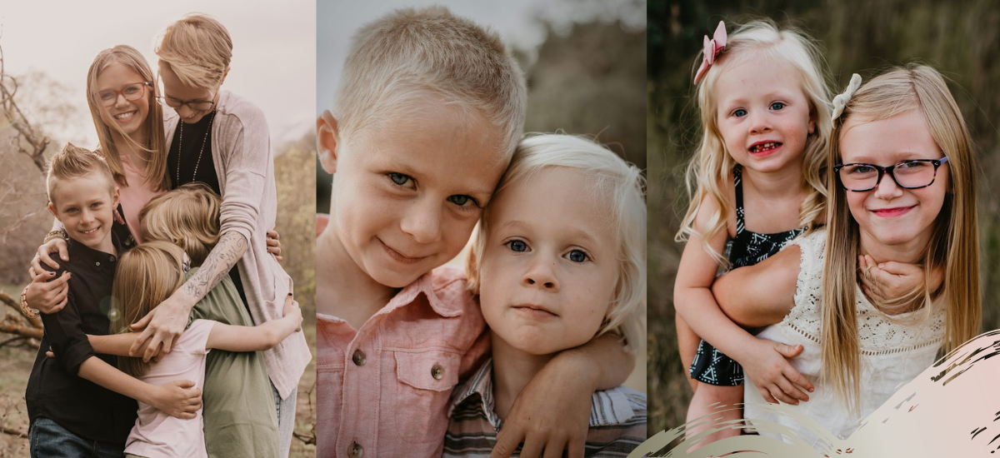
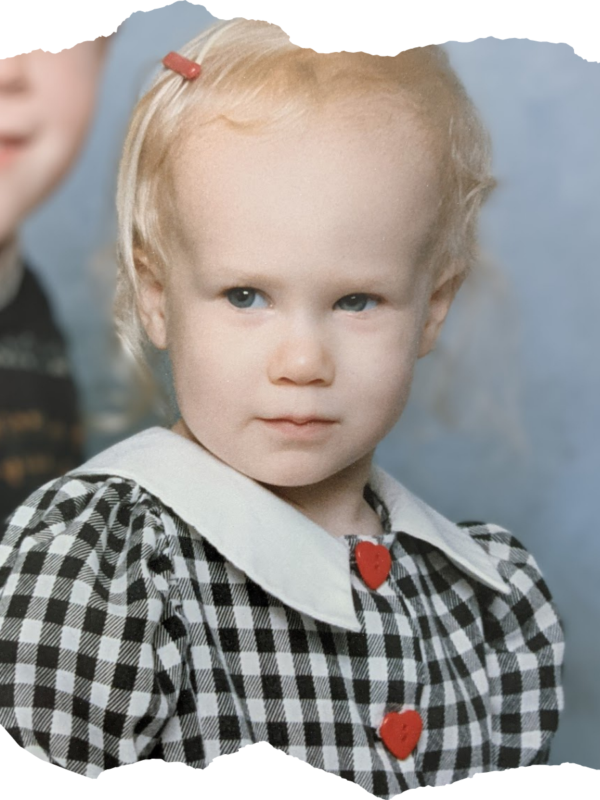
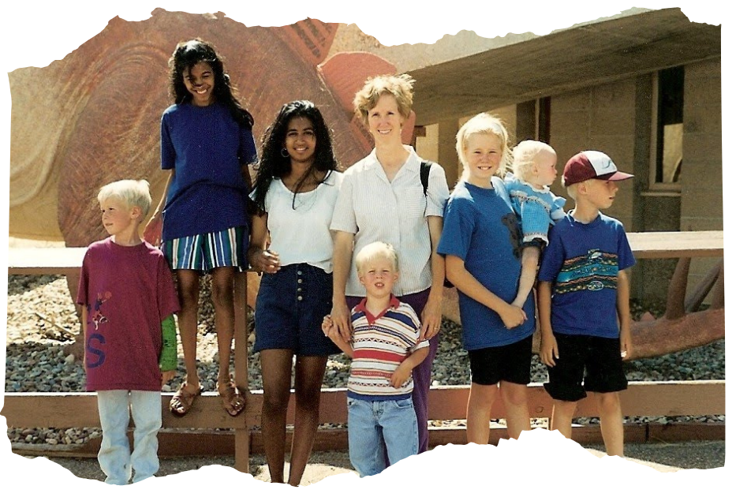
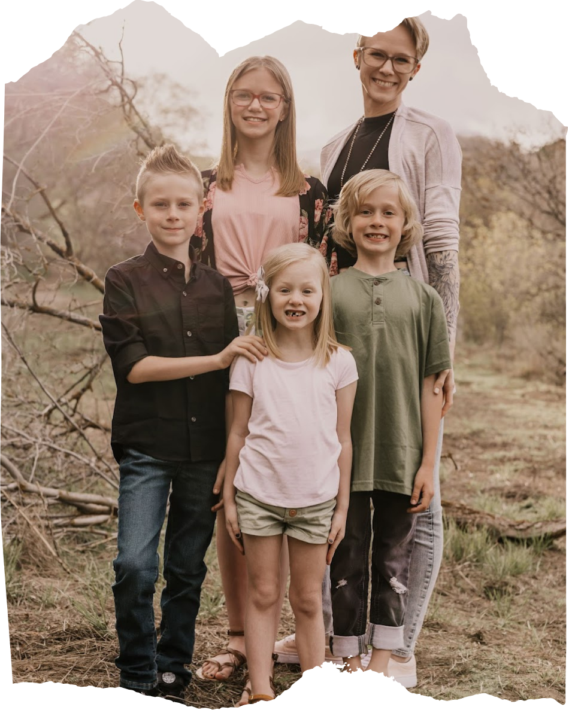

 

Born and raised in the Salt Lake Valley, I am the youngest of seven children. I'd like to say I grew up in a typical Mormon family, but we were all a little bit neuro-spicy. There was a lot of trauma. However I can say with a surety, my parents loved me.
As a teen, I got into gymnastics. I had no idea just how much I would love this sport. It was a fantastic source of dopamine and kept me away from the not so great sources of dopamine so commonly sought after by adolescents. Unfortunately, it is very hard on the body and I had to call it quits when I was 16.
I have always been fascinated by the human body and brain,
and I had planned on chasing a career in the medical field.
I graduated high school but before my 19th birthday, those
career plans screeched to a halt when I had my daughter.
She became the center of my universe.
I was a single mom, working full time, and a medical career
seemed like it was no longer an option.
So I reverted to my upbringing.
I got married at 19, became a stepmom, lost my dad at 22, and started trauma therapy. By my 25th birthday, I was raising five children. My mental health deteriorated with each pregnancy. I saw the gaps in treatment options for new parents first-hand and I became passionate about maternal mental health. I started a blog, I became a featured writer for the Utah Doula Association, I guest starred on a podcast about mental health; I became the "Mental Mommy”.
And then it was 2020.
Over the following two years, my life would implode.
My mom would be diagnosed with cancer, I would homeschool
my children through a global pandemic, and my marriage
would fall apart.
After ten years, in 2022 I was divorced.
I lost my home, my son, my chickens, my health,
and almost everything I had planned for in my life was suddenly gone.
But, I gained perspective.
I lost time with my children, so I traveled for the
first time in my life. I lost half of my family,
so I made new friends.
But in March of 2023, the married home sold and
after moving from one apartment to another, I found
rock bottom’s basement.
I was at the lowest point in my life. My physical health
had deteriorated to a terrifying point, my first relationship
post divorce was on the rocks, my kids went to their dad’s for
the weekend, my life was in boxes, and I found
myself so utterly alone. It was one of the most painful,
darkest, longest nights of my life.
And as I sat on the floor, trying to unpack boxes through
the seemingly endless stream of tears, I had a thought.
Call it intuition, a daydream, dissociation, call it what you will…
But I saw myself standing in front of a group of people, telling
them about that night. About my rock bottom, my journey through it.
And I have held onto that this past year. I saw myself standing here today,
so I knew I was going to make it through.

I have accepted that life takes you on a ride.
Sometimes you’re driving, sometimes you’re in the
trunk.
It can be a leisurely smooth ride one day and a rollercoaster the next. You can choose to be
angry,
reactive, bitter, judgemental, and cruel. You can be a victim. What a miserable ride that is,
I’ve lived it. Or you can choose to relinquish control of others’ actions, be humble, empathetic,
open-minded,
loving, and consistent. That doesn’t mean you allow others to hurt you, it means you stop hurting
yourself.
Something I regularly say to my children:
"It costs nothing to be kind, but what
does it cost to be
angry?
Your peace."